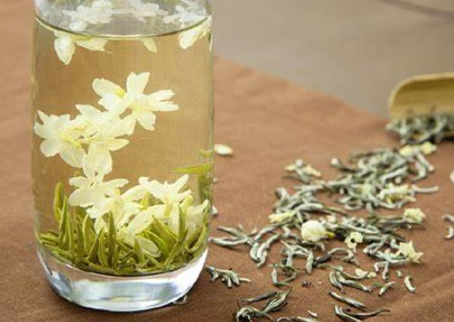
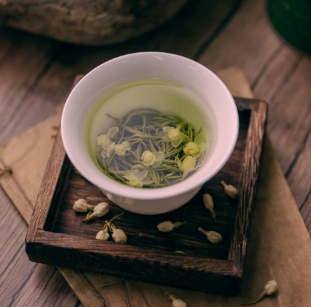
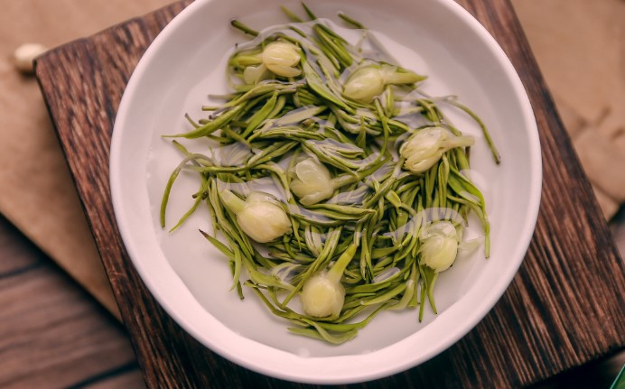
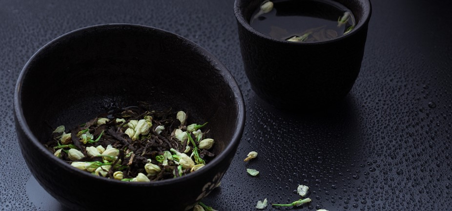
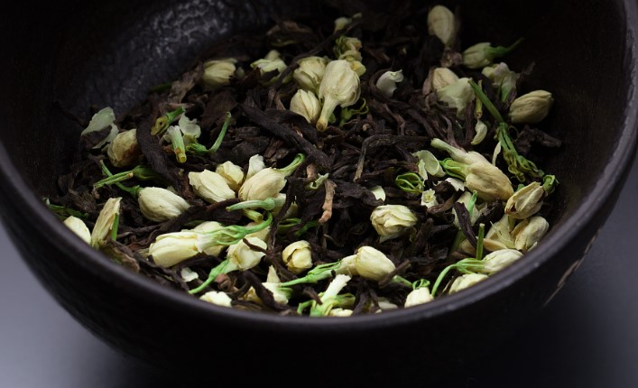
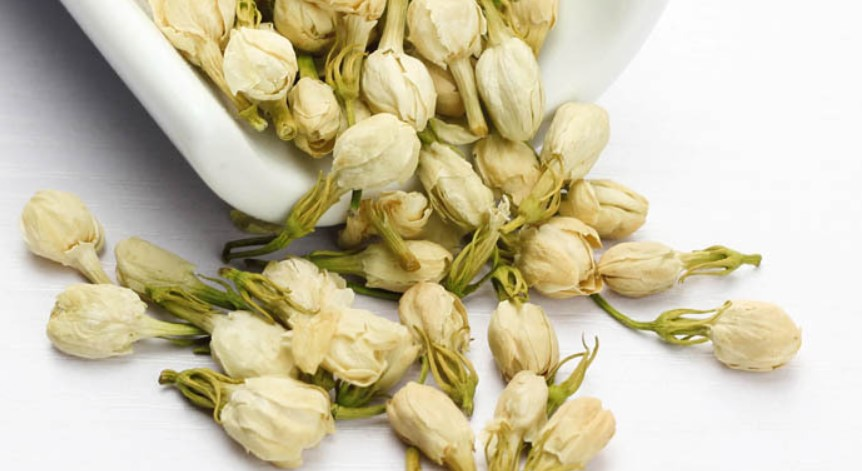
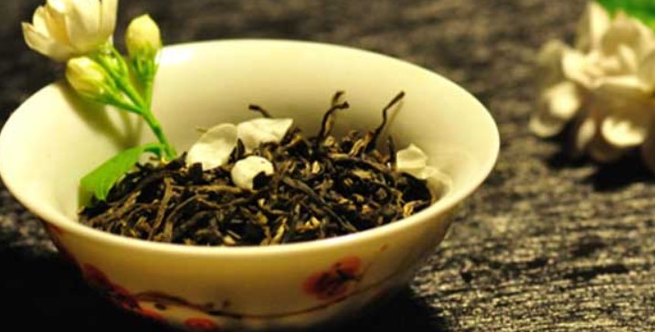

茉莉花茶
茉莉花茶（Jasmine Tea），又叫茉莉香片，属于花茶，茶胚为绿茶，成品将茉莉花去除，亦属于绿茶的一种，已有1000多年历史。
世界茉莉花茶发源地为福建福州，其茶香与茉莉花香交互融合，有“窨得茉莉无上味，列作人间第一香”的美誉，茉莉花茶是花茶的大宗产品，产区辽阔，产量高，品种丰富。
在清朝时被列为贡品，有150多年历史。福州茉莉花茶源于汉，中医的创新促进福州茉莉花茶诞生，宋朝中医局方学派对香气和茶保健作用的充分认识，引发香茶热，诞生了数十种香茶。
新中国成立以来，福州茉莉花茶一直是国家的外事礼茶。茉莉花茶是将茶叶和茉莉鲜花进行拼和、窨制，使茶叶吸收花香而成的茶叶。
历史发展
根据汉朝《史书》记载，茉莉花最早起源于古罗马帝国，汉朝时期，通过海上丝绸之路到达古波斯、天竺，到了印度后成为佛教圣花，之后随印度佛教传到福州。
茉莉花在唐朝时被认为是玉骨冰肌、淡泊名利的象征，代表士大夫的气节。人们认为，茉莉花一出，则百花不香，从那时候开始茉莉花就成为了“天香”，与菩提均作为佛家圣物。
宋朝时，中国兴起了把香入茶的热潮，因为香在古代是保健品，是药引，茶是药，能够解百毒。在福州本土话中，茶和药都被叫做“dao”，导致香和茶合在一起。宋代时有几十种香料茶，经过时代变革，被淘汰掉多种花，只剩下五六种，茉莉花占比96%，茉莉花茶由此兴盛。
茉莉花茶最早是士大夫赏玩的香料茶，明朝末期开始商品化，清朝时期大量商品化。
慈禧太后对茉莉花有特殊的偏爱，慈禧认为自己肤如凝脂、肌如皓雪，于是规定旁人均不可簪茉莉花，外国使节和其夫人到中国时，慈禧就经常将茉莉花茶作为礼品送给这些人，所以在慈禧掌权的几十年间，茉莉花一度被认为是“国花”。
1856年至1886年，茶叶出口占全国茶叶出口总额的35%到44%，成为世界最大的茶叶市场。
1866年5月30日，英国快速帆船“羚羊”号与“塔平”号等5艘帆船同时从福州马尾出发，开展一场福州到英国的茶叶运输竞赛，用99天时间到达英国的里程。
“塔平”号仅以早到20分钟而赢得胜利，福州到欧洲的距离从270天缩短到100天，使新鲜优质的中国茶叶到欧洲成为可能。
1866年后，福州茉莉花茶开始大量出口到欧洲。
1872年俄国人在福州泛船浦开办埠昌茶厂，福州成为中国历史上最早机械制茶的地区。
1884年马江海战后，福州港提高茶叶税收50%，以此增加收入用于建造新船。
1885年到1886年间到达英国的福州茶叶质量低劣，与之前英国人不愿意喝的印度红茶相比缺乏优势，被其取代。
1889年，福州出口红茶下降40%，只剩下特殊茶种如茉莉花和乌龙茶仍为世界出口最多，印度取代福州世界最大茶港地位。
到了20世纪90年代，福建出现大量其它品类茶种，加之福州本地茉莉花茶企的垄断和茶叶价格的恶性竞争，福州茉莉花茶企业从当时的500多家减少到三四十家。
自然地理
产地分布
主产地在福建的福州、四川的宜宾、乐山犍为、广西的横县、云南元江
生长环境
茉莉性喜光忌荫、喜温畏寒、喜湿怕涝，适宜在光照充足，气候适宜，平均气温在20℃～40℃，土壤持水量在60%～80%的条件下生长。
由于茉莉花茶制作要求茉莉鲜花采摘后当晚付制，因此茉莉花茶的产区分布需交通便利、紧邻茉莉花产地。
福州属于典型的河口盆地，盆地四周山海拔多在600～1000米之间，日照短，多散射光，云雾缭绕，十分利于种茶树；盆地中心的冲积平原为沙壤土，肥力高，水份足，扦插茉莉易成活，昼夜温差大使茉莉花品质好，在福州形成“山丘栽茶树，沿河种茉莉”的合理利用自然资源的种植格局。
主要品种
广西花茶
广西花茶以广西横县所产茉莉花，横县是中国最大的茉莉花生产基地，被国家林业局、中国花卉协会命名为“中国茉莉之乡”。
龙团珠
龙团珠茉莉花茶产于福建福州。是福州茉莉花茶中的传统地方名牌产品。品质特点：外形圆紧重实、匀整；内质香气鲜浓，滋味醇厚，汤色黄亮，叶底有肥厚。
政和银针
政和茉莉银针茉莉花茶。产于福建政和茶厂。主销北京、天津等地。其品质特点：外形芽条肥壮，满披茸毛，形似银针，色泽油润；内质汤色清澈明亮，花香芬芳、浓郁，冲泡3～4次花香犹存，滋味鲜浓醇爽回甘，叶底肥厚匀嫩，根根如针。
金华茉莉
又称“金华花茶”，产于浙江省金华市，采选上好的绿茶作为茶坯，同头圆、粒大、饱满、洁白、光润、芳香的优质茉莉花经窨制而成，制作过程中必须抓珠鲜花吐香、茶坯吸香、复火葆香3个重要环节。
其品种有茉莉毛峰茶、茉莉烘青花茶、茉莉炒青花茶等，其中以茉莉毛峰茶品质最佳，茉莉毛峰茶全身银毫显露，芽叶花朵卷紧；色泽黄绿透翠，汤色金黄清明；茶香浓郁清高，滋味鲜爽甘醇；旗枪交错杯中，形态优美自然。
苏州花茶
产于江苏省苏州茶厂，它的生产始于南宋，历史十分悠久，是我国的传统名花茶，被誉为中国十大名茶（非官方）之一。苏州茉莉花茶选用苏、浙、皖三省吸香性能好的烘青绿茶为茶坯，配以香型清新而又成熟粒大、洁白光润的茉莉花精工窨制而成，达到十余道工序之多。成品苏州茉莉花茶外观条索紧细匀整，白毫显露，干茶色泽油润；冲泡后的茶汤清澈透明，叶底幼嫩；香气鲜美、浓厚、清高，入口爽快，持续性能好。
四川茉莉花茶
碧潭飘雪、炒花飘雪、林湖飘雪、金针兰雪、峨顶飘雪、细芽飘雪、茉莉香雪、龙都香茗。
四川茉莉花茶以四川峨眉山、蒙山、宜宾等所产川青为茶坯，具有独特的窨制工艺，代表品种为碧潭飘雪、炒花飘雪、林湖飘雪，细芽飘雪，独具风格。四川花茶，均采用四川本地天然鲜花窨制，以四川明前茶为茶坯，多重窨制，品饮此茶，花香不掩茶香，茶香混有花香，滋味鲜爽，层次感丰富。
品茗指南
冲泡方法
冲泡花茶时水温80-90摄氏度为宜，通常茶水的比例为1：50，每泡冲泡时间为3-5分钟。
品饮技巧
一、冲泡
品饮高档花茶，通常采用透明的玻璃杯冲泡，用 90~C左右的沸水冲泡，冲泡时间约3-5min，冲泡次数以2-3次为宜。冲泡时可通过玻璃杯欣赏茶叶精美别致的造型。盖碗冲泡法是四川人品饮花茶常用的方法，一套茶具有茶碗、茶托、茶盖，每人一套盖碗泡茶，边饮边品，摆摆“龙门阵”，悠悠自得，其乐无穷。
二、闻香
茉莉花茶经冲泡静置片刻后，即可提起茶盏，揭开杯盖一侧，用鼻闻香，顿觉芬芳扑鼻而来。有兴趣者，还可凑着香气作深呼吸状，以充分领略香气对人的愉悦之感，人称“鼻品”。
三、品饮
经闻香后，待茶汤稍凉适口时，小口喝入，并将茶汤在口中稍时停留，以口吸气、鼻呼气相配合的动作，使茶汤在舌面上往返流动12次，充分与味蕾接触，品尝茶叶和香气后再咽下，这叫“口品”。所以民间对饮茉莉花茶有“一口为喝，三口为品”之说。
四、欣赏
特种工艺造型茉莉花茶和高级茉莉花茶泡在玻璃杯中，在品其香气和滋味的同时可欣赏其在杯中优美的舞姿。
选购技巧
观形
一般上等茉莉花茶所选用的茶坯，以嫩芽者为佳。以福建花茶为例：条形长而饱满、白毫多、无叶者上，次之为一芽一叶、二叶或嫩芽多，芽毫显露。越是往下，芽越少，叶居多，低档茶则以叶为主，几乎无嫩芽或根本无芽。
冲泡
选购时有条件的话，应尽量冲泡一下，通过冲泡能使茉莉花茶的品质得以充分展示。冲泡方法采用杯泡法，一般分两次冲泡。即取茶3克，冲入约150毫升开水，浸泡3分钟后滤出茶汤，闻嗅香气、察看汤色、品尝滋味；第二次冲入开水，浸泡5分钟后滤出茶汤，依次嗅香、观色、尝味。
闻香
好的花茶，其茶叶之中散发出的香气应浓而不冲、香而持久，清香扑鼻，闻之无丝毫异味。
观色
茉莉花茶的汤色应以黄而明亮为佳，若深暗泛红，往往是品质有弊病的表现，如茶叶陈化、窨花时闷堆太久、烘干不及时等都会影响汤色。
尝味
购买时如条件允许，可坐下来品尝一下，观其汤色、闻其香气、品其滋味，香气浓郁、口感柔和、不苦不涩、没有异味为最佳。
存储方法
茉莉花茶是绿茶的再加工茶，含水量高、易变质。因此保管时应注意防潮，尽量存放于阴凉干燥、无异味，通风的环境中。
等级
一般特种茉莉花茶采用的原料嫩度好，常为一芽一叶、二叶或嫩芽多，芽毫显露。
1、特级、一级茶
采用的原料嫩度较好，条形细紧，芽毫稍显露。
2、二级、三级
二级、三级的茶所用原料嫩度稍差，基本无芽毫。
3、四级、五级
四级、五级的茶属于低档茶，原料嫩度是比较差，条形松、大，常带茎梗。